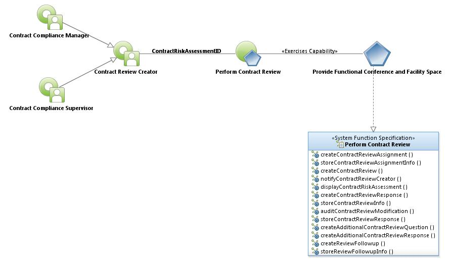
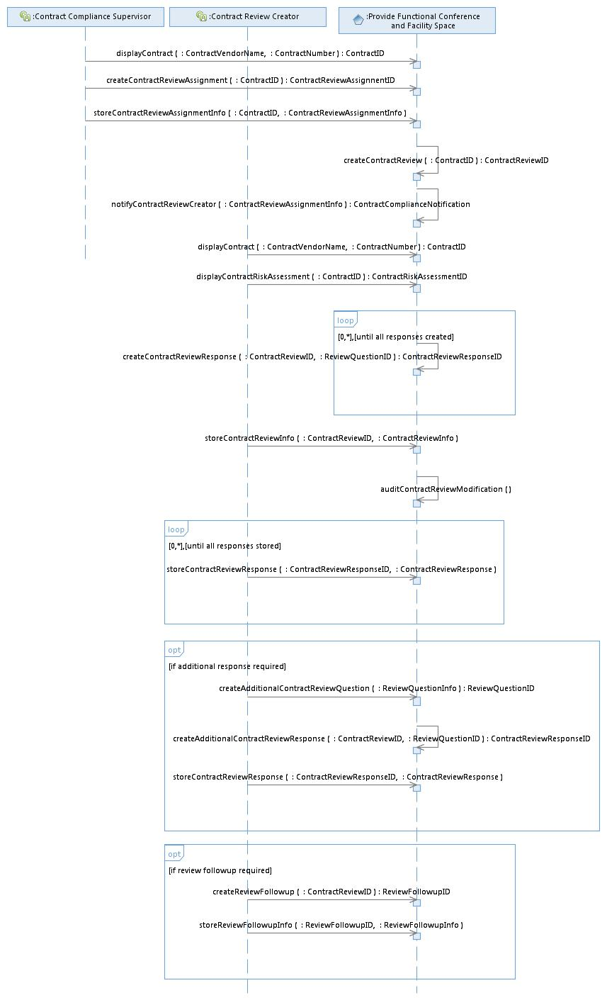

|
Perform
Contract Review Use Case Specification
Last Modified: 6/30/2016
Select to
enlarge...

Perform Contract
Review Use
Case Model |
Scope: The Contract Compliance Supervisor uses the system to locate
and display a Contract, create an associated ContractReviewAssignment and enter
ContractReviewAssignmentInfo. Upon storing the ContractReviewAssignment, the
system automatically creates a new Contract Review and the ContractReviewStatus
is set to 'In Progress.' The
ContractReviewAssignment is needed for a number of reasons: Discernment on the
part of the Contract Compliance Supervisor or because the system created an
AssignmentRequest or based upon the Ranking of a previous RiskAssessment. The
system daily searches for Contract Review Assignments to begin within 60 days,
30 days, 5 days and notifies the appropriate Contract Review Creator that a
Contract Review is due. The Contract Review Creator uses the system to locate
and display a Contract by searching for the VendorName or ContractNumber. Next
they choose an associated ContractRiskAssessment with which a ContractReview is
associated. The Contract Review Creator selects the newly created
ContractReview and uses the system to store ContractReviewInfo. The Contract
Review Creator provides all Answers to the ContractReview questions and uses
their skills and judgment to set a MonitoringLevel for each Answer. If needed,
the Contract Review Creator creates and stores a ReviewFollowupComment. If the
ContractReviewStatus has a value of 'Published', the ContractReview can no
longer be modified. Finally, the Contract Review Creator changes the
ContractReviewStatus to 'In Review.'
Select to
enlarge...

Perform Contract
Review Sequence Diagram |
Table of
Interface Descriptions
| Type/Interface |
Description |
Provide Functional Conference and Facility Space/
displayContract
|
The user uses the Contract
Manager system to locate and
display a Contract by searching for the Contract Vendor Name or the
Contract
Number.
|
Provide Functional
Conference and Facility Space/
createContractReviewAssignment |
The Contract Compliance Supervisor uses the system to create
a ContractReviewAssignment.
|
Provide Functional Conference and Facility Space/
storeContractReviewAssignmentInfo |
The Contract Compliance Supervisor uses the system to enter
ContractReviewAssignmentInfo: NextReviewDateDue, NextReviewCreator,
NextReviewType (Desk Review, Onsite Review). ContractReviews may be
independently requested, but if the last Contract Risk Assessment was done
years ago, a new ContractRiskAssessment must be created prior to performing the
ContractReview. ContractRiskAssessment Ranking may reveal that a ContractReview
is not recommended; however, this does not prevent the creation of a
ContractReview. If the ContractReview is of a ContractReviewType of 'On-site
Review', the Contract Review Creator uses either a printout and subsequent
system interface or a mobile device to store ContractReviewInfo.
|
Provide Functional
Conference and Facility Space/
createContractReview |
The system creates a Contract Review using the ContractID
and receives a ContractReviewID in return.
|
Provide Functional Conference and Facility Space/
notifyContractReviewCreator |
The system daily searches for Contract Review Assignments to
begin within 60 days, 30 days, 5 days and notifies the appropriate Contract
Review Creator assigned to the task. Notification appears in the form of a
dashboard item displaying all ContractReviews due for a Contract Review Creator
along with their NextReviewDateDue and NextReviewType (Desk Review, On-site
Review). Notification also includes ContractReviewStatus (In Progress, On Hold,
In Review are visible to the Contract Review Creator. Published and Closed are
also statuses, but are only entered by the Contract Compliance Supervisor). The
dashboard does not include ContractReviews with a ContractReviewStatus of
'Published'. The dashboard displays ContractReviews that have a
ContractReviewStatus of 'In Review' in their own portal. The dashboard displays
ContractReviews that are past due in their own portal. The detail screen for a
Contract contains a tab (Contract Monitoring tab) for Risk Assessment/Review,
where-in all RiskAssessments and ContractReviews are seen in respective
portals.
|
Provide Functional Conference and Facility Space/
displayContractRiskAssessment
|
The Contract Review Creator uses the system to locate and
display a ContractRiskAssessment by choosing it from a list of
ContractRiskAssessments related to a Contract.
|
Provide Functional
Conference and Facility Space/
createContractReviewResponse |
The system creates a series of ContractReviewResponses
(associated with the newly created ContractReview) based upon the contents of
the ReviewQuestionRepository and makes these ready for input by the Contract
Review Creator.
|
Provide Functional
Conference and Facility Space/
storeContractReviewInfo
|
The Contract Review Creator uses the system to store
ContractReviewInfo: ContractReviewStatus ('In Progress' by default),
ContractReviewType (Desk Review, On-site Review), MonitoringLevel (1, 2 or 3),
for the entire desk review), DateAssigned, DateDue, DateStarted, DateCompleted,
DateClosed (stored by the system when the ContractReviewStatus is changed to
'Closed'), DatePublished (stored by the system when the ContractReviewStatus is
changed to 'Published'), RecommendationAndRequirements (limited to 1,000
characters), StaffInterviewed and OverallComments. If the Contract Review is of
ContractReviewType 'On-site', the Contract Review Creator uses either a
printout and subsequent system interface or a mobile device to store
ContractReviewInfo. If a mobile device is used, the mobile app displays all
Contract Reviews of ContractReviewType 'On-site' for the specific Contract
Review Creator that are of ContractReviewStatus 'In Progress'. The Contract
Review Creator uses their skills/judgment to set a MonitoringLevel. Finally,
the Contract Review Creator changes the ContractReviewStatus to 'In Review',
making it ready for review by the Contract Compliance Supervisor. If the
Contract Review Creator is using a mobile app to change the
ContractReviewStatus to 'In Review', the ContractReview is no longer visible in
the mobile app. ContracReviewStatus is changed from 'Published' to 'Closed'
when all follow-up work has been completed and this modification can be made by
any user of the system. ContractReviews have a ContractReviewStatus: In
Progress, On Hold, In Review, Published, Closed. If the ContractReviewStatus
has been reviewed by the Contract Compliance Supervisor and is 'Published', the
ContractReview can no longer be modified, with the exception of the
ReviewFollowup data elements. Changing the ContractReviewStatus to 'Published'
can only be done by the Contract Compliance Supervisor or their designee. All
edits made to the ContractReviewInfo by the Contract Review Creator are audited
by tracking AuditTimeLog data (EditStartTimestamp, EditDetail [how many field
values changed], and EditEndTimestamp). Additionally, any modifications made to
the ContractReviewStatus are stored in the AuditStatusLog. The AuditStatusLog
stores the following information: IsDeskReview, IsOnsiteReview,
StatusChangedTo, CreationTimestamp. The Contract Review is printable in its
entirety by clicking a 'Print Contract Review' button.
|
Provide Functional
Conference and Facility Space/
auditContractReviewModification |
The system audits all modifications to the
ContractReviewInfo by storing an AuditTimeLog (EditStartTimestamp, Edit Detail
[a list of how many data values changed] and EditEndTimestamp) providing the
capability to the Contract Review Creator to run reports showing all changes to
ContractReviewInfo.
|
Provide Functional
Conference and Facility Space/
storeContractReviewResponse |
The Contract Review Creator uses the system to store each
ContractReviewResponse: SectionTitle (Financial Review, Performance Review,
etc), SectionOrder (A,B,C..), Response, Comment. If the Contract Review is of
ContractReviewType 'On-site', the Contract Review Creator uses either a
print-out and subsequent system interface or a mobile device to store
ContractReviewResponse.
|
Provide Functional
Conference and Facility Space/
createAdditionalContractReviewQuestion
|
If an additional ReviewQuestion is required, The Contract
Review Creator uses the system to create the ReviewQuestion by entering
ReviewQuestionInfo (ReviewQuestionType, ReviewQuestionSection,
ReviewQuestionOrder (entered by default by the system), ReviewQuestion).
|
Provide Functional
Conference and Facility Space/
createAdditionalContractReviewResponse |
The system creates a ContractReviewResponse, based upon the
additional ReviewQuestion stored and makes it ready for input by the Contract
Review Creator.
|
Provide Functional
Conference and Facility Space/
createReviewFollowup |
If needed, the Contract Review Creator uses the system to
create a ReviewFollowup by clicking the 'Follow-up' button in the Contract
Review detail screen. ReviewFollowups are added incrementally to an associated
list, with the most recent ReviewFollowup appearing at the top of the list.
ReviewFollowups are created for the purpose of noting information regarding
work performed, conversations with the vendor, work completed incorrectly, etc.
(Examples: If a Desk Review requirement (RecommendationsAndRequirements) is
“Vendor is required to submit employee timesheets for the previous month on the
fifth of every month.” In the ReviewFollowup section field, the Contract Review
Creator writes: 9/2/2015: August employee timesheets received. Issue Closed.
8/1/2015: July employee timesheets received. 7/15/2015: received June employee
timesheets. Vendor confirmed new process is being put into place to ensure
timely delivery. 7/10/2015: contacted Vendor for June employee timesheets.
Deliverable is 5 days late.)
|
Provide Functional
Conference and Facility Space/
storeReviewFollowupInfo |
The Contract Review Creator uses the system to store the
following ReviewFollowupInfo: FollowupComment, FollowupDate, FollowupCreatedBy
(automatically stored by the system).
|
|
{kind=link}
{kind=link}
{kind=link}
{kind=link}
{kind=link}
{kind=link}